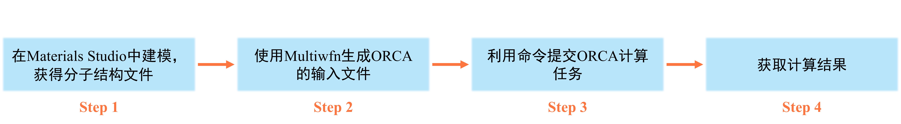

ORCA的使用
本篇文章主要用于说明量子化学计算软件ORCA的使用方法。
ORCA是著名的量子化学软件。该程序可在ORCA官网上进行下载。下载前需先注册相应的ORCA用户账号。若因为特殊原因无法下载ORCA，可通过网盘进行下载(注：若需使用ORCA，请务必主动去ORCA官网注册，仔细阅读使用条款并确认自己有免费使用的权限)。
ORCA的安装
如何在自己的虚拟机中安装ORCA，相关的帖子已经叙述的很清楚了，这里不再赘述。下面主要讨论ORCA的使用方法。
ORCA的使用方法
ORCA的使用主要分为以下的几个步骤：

注意
Materials Studio输出分子的结构文件保存为pdb文件或mol2文件即可。其中，pdb文件中不记录原子间的键连关系，而mol2文件记录原子间的键连关系。对于量子化学计算，计算程序读入的仅是原子之间的坐标信息，原子之间是否成键与最终的计算结果无关。因此，任意包含原子坐标信息的文件都可以转换成ORCA的输入文件。
Step1: 在Materials Studio中建模，获得分子的结构文件
该部涉及到Materials Studio具体的使用方法，这里不进行相关阐述。
Step2: 使用Multiwfn生成ORCA输入文件
首先打开Multiwfn，然后将上一步得到的结构文件直接拉进Multiwfn中，然后便会出现以下的菜单选项：
************ Main function menu ************
0 Show molecular structure and view orbitals
1 Output all properties at a point 2 Topology analysis
3 Output and plot specific property in a line
4 Output and plot specific property in a plane
5 Output and plot specific property within a spatial region (calc. grid data)
6 Check & modify wavefunction
7 Population analysis and calculation of atomic charges
8 Orbital composition analysis 9 Bond order analysis
10 Plot total DOS, partial DOS, OPDOS, local DOS and photoelectron spectrum
11 Plot IR/Raman/UV-Vis/ECD/VCD/ROA/NMR spectrum
12 Quantitative analysis of molecular surface
13 Process grid data (No grid data is presented currently)
14 Adaptive natural density partitioning (AdNDP) analysis
15 Fuzzy atomic space analysis
16 Charge decomposition analysis (CDA) and plot orbital interaction diagram
17 Basin analysis 18 Electron excitation analysis
19 Orbital localization analysis 20 Visual study of weak interaction
21 Energy decomposition analysis 22 Conceptual DFT (CDFT) analysis
23 ETS-NOCV analysis 24 (Hyper)polarizability analysis
25 Electron delocalization and aromaticity analyses
26 Structure and geometry related analyses
100 Other functions (Part 1) 200 Other functions (Part 2)
300 Other functions (Part 3)
oi进行ORCA输入文件的产生。首先，请先输入ORCA输入文件保存的路径，如下图所示：
Input path for generating ORCA input file, e.g. C:\ltwd.inp
If press ENTER button directly, will be exported to COF.inp
-100 Use template input file provided by user to generate new input file
-11 Choose ORCA version compatibility, current: >ORCA 5.0
-10 Set computational resources, core: 4 memory/core: 1000 MB
-5 Set mixed basis set, current: Defined for 0 atoms
-4 Other settings
-2 Toggle adding diffuse functions, current: No
-1 Toggle employing implicit solvation model, current: No
0 Select task, current: Single point
1 B97-3c 1b r2SCAN-3c
2 RI-BLYP-D3(BJ)/def2-TZVP
3 RI-B3LYP-D3(BJ)/def2-TZVP(-f) 4 RI-B3LYP-D3(BJ)/def2-TZVP
5 RI-wB97M-V/def2-TZVP
6 RI-PWPB95-D3(BJ)/def2-TZVPP 7 RI-PWPB95-D3(BJ)/def2-QZVPP
6b RI-wB97X-2-D3(BJ)/def2-TZVPP 7b RI-wB97X-2-D3(BJ)/def2-QZVPP
6c RI-revDSD-PBEP86-D4/def2-TZVPP 7c RI-revDSD-PBEP86-D4/def2-QZVPP
8 DLPNO-CCSD(T)/cc-pVTZ with normalPNO and RIJK
9 DLPNO-CCSD(T)/cc-pVTZ with tightPNO and RIJK
10 CCSD(T)/cc-pVTZ
11 CCSD(T)-F12/cc-pVDZ-F12 with RI
12 Approximated CCSD(T)/CBS with help of MP2 (cc-pVTZ->QZ extrapolation)
13 DLPNO-CCSD(T)/CBS with tightPNO and RIJK (def2-TZVPP->QZVPP extrapolation)
14 CCSD(T)/CBS (cc-pVTZ->QZ extrapolation)
20 sTD-DFT based on RI-wB97X-D3/def2-SV(P) orbitals
21 TDA-DFT RI-PBE0/def2-SV(P) with riints_disk (much faster than 22)
22 TDDFT RI-PBE0/def2-SV(P)
23 TDDFT RI-RSX-QIDH/def2-TZVP 231 TDDFT RI-DSD-PBEP86/def2-TZVP
24 EOM-CCSD/cc-pVTZ 25 STEOM-DLPNO-CCSD/def2-TZVP
- 对于选项
-11：课题组超算上安装的ORCA版本为5.0.3，此选项无需更改 - 对于选项
-10：若该任务在超算上进行，此输入文件运行的核数并不取决于这里的取值(取决于什么，请看后面的内容)。若该任务在自己的虚拟机上进行，请将该值调整为你想运行的核数 - 对于选项
-2：何时加弥散，何时不加弥散请看《谈谈弥散函数和“月份”基组》 - 对于选项
-1：若所需计算的化学物种是在溶剂中的，并且想使用隐式溶剂模型，则需要进入此选项进行设置 - 对于选项
0：在这里确定计算的任务类型，该项结合自己的计算需求进行选择 - 选项
1至25为计算级别，各计算级别的确定请看《详谈Multiwfn产生ORCA量子化学程序的输入文件的功能》
确定好计算级别之后，ORCA输入文件就已自动生成在前面输入的文件保存的路径下。
Step3: 利用命令提交ORCA任务
- 虚拟机中提交ORCA计算任务的命令为：
例如：
orca test.inp > test.out：ORCA的输入文件的名字为test.inp，ORCA计算结果写入test.out文件中
注意
上述命令能正确执行的前提条件是在.bashrc文件中加入了ORCA的可执行文件目录。若ORCA解压后的目录是/sob/orca600/，就在.bashrc文件里加入下面的几行。
- 超算中提交ORCA计算任务的命令为：
例如：
SubOr.sh test.inp 4：ORCA输入文件的名字为test.inp，运行该文件所用的核数为4SubOr.sh test.inp：ORCA输入文件的名字为test.inp，运行该文件所用的核数为16
注意
在超算中，ORCA运行的核数以SubOr.sh命令中所规定的核数为准。
在ORCA的输入文件中，%pal nprocs后跟的数字即为运行该计算任务的核数，例如：
SubOr.sh命令提交ORCA计算任务时，命令会自动把ORCA输入文件中所规定的核数改为SubOr.sh命令中所规定的核数。
采用SubOr.sh脚本提交ORCA的注意事项
ORCA输入文件需要由Multiwfn生成，否则会报错。如下所示ORCA输入文件中%pal nprocs这一行所规定运行的核数与SubOr.sh命令中所确定的核数不一致，会出现以下的提示Step4: 获取计算结果
对于需要查看能量的计算项目，可在.out文件中查找FINAL SINGLE POINT ENERGY，最后一个FINAL SINGLE POINT ENERGY对应的即为得到的能量值。
对于其他计算项目，需要具体情况具体分析。
利用已有的波函数文件进行波函数初猜
可在ORCA输入文件中加上%moinp "XXX.gbw"(XXX.gbw是要读取的gbw文件名)这一行进行波函数读取。此外，在进行单点能计算时(仅在进行单点能计算时)，ORCA会先检测有没有跟输入文件同名的gbw文件，如果有的话会自动读取波函数，而不重新初猜进行SCF迭代。如果不想自动读取波函数，需要使用!noautostart关键词。
对于某些需要更为细致研究体系的情况，进行波函数分析是一个很好的选择。目前，可使用Multiwfn对ORCA计算得到的波函数文件进行波函数分析。ORCA直接输出的波函数文件为gbw文件，但是Multiwfn无法直接对gbw文件进行读取，需使用到ORCA自带的orca_2mkl命令。在虚拟机中实现上述转换的代码如下：
MIO.gbw文件转换成molden文件。
在超算中可使用gbw.sh命令实现上述转换。gbw.sh命令的语法如下：
gbw.sh test.gbw：将test.gbw转换成test.molden。
采用gbw.sh脚本实现波函数文件格式转换的注意事项
gbw.sh脚本后需接gbw文件名参数，否则会报错，如下所示。
gbw.sh脚本后的gbw若不存在也会报错，如下所示。